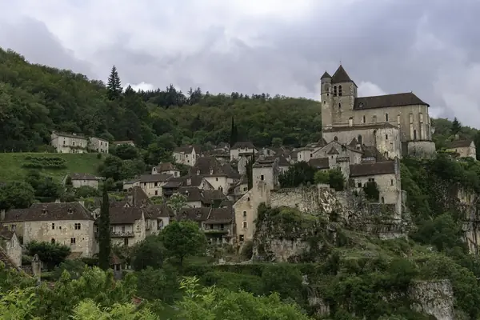

Home › Wine regions › South West France
South West France wine region

Photo: le Sixième Rêve on Unsplash
Cahors Malbec, Madiran Tannat, sweet Jurançon and a patchwork of local grapes between Bordeaux and the Pyrenees.
The benchmark for many wine styles, organised by appellation (AOC).
Climate and soil
Mostly Atlantic-influenced, growing warmer and drier inland towards Toulouse, with mild autumns that suit late-picked sweet wines. Cahors spreads over the Lot river terraces and the limestone causse above them; Madiran sits on clay-limestone and gravel; Jurançon's steep slopes in the Pyrenean foothills catch the warm, dry foehn wind in autumn.
Key areas and appellations
Cahors, Madiran, Pacherenc du Vic-Bilh, Jurançon, Irouléguy, Saint-Mont, Gaillac, Fronton, Marcillac, Bergerac, Monbazillac, Pécharmant, Buzet, Côtes de Duras, Côtes de Gascogne IGP
Good to know
Less a single region than a collection of independent wine districts, many with grapes found almost nowhere else (Fer Servadou, Négrette, Len de l'El, Mauzac). Cahors reds must be at least 70% Malbec, known locally as Côt or Auxerrois. Micro-oxygenation, now used worldwide, was developed in Madiran in the early 1990s to tame Tannat's tannins.
The grapes of South West France
- Malbec (red): plum, blackberry, violet. Best known in Mendoza, Cahors.
- Tannat (red): blackberry, plum, spice. Best known in Uruguay, Madiran.
- Petit Manseng (white): pineapple, apricot, honey, ginger. Best known in Jurançon, Virginia.
- Gros Manseng (white): pineapple, grapefruit, quince, spice. Best known in Jurançon, Gascony.
- Colombard (white): citrus, apple, herbs. Best known in Gascony, South Africa.
Notable producers in South West France
- Château du Cèdre
- Alain Brumont (Château Montus, Bouscassé)
- Clos Triguedina
- Château Lagrézette
- Domaine Cauhapé
- Clos Lapeyre
- Plaimont
- Domaine du Tariquet
- Château Tirecul La Gravière
Official appellations
| Appellation | Status | Style | Grapes |
|---|---|---|---|
| Cahors (1971) Dark, firm reds from at least 70% Malbec, grown on terraces along the Lot river and on the limestone plateau above. | AOC | Red | Malbec, Merlot, Tannat |
| Madiran (1948) Tannat-led reds from the Gascon hills north of Pau: deep in colour and tannin, built for ageing and for duck and cassoulet. | AOC | Red | Tannat, Cabernet Franc, Cabernet Sauvignon |
| Jurançon (1936) Pyrenean foothill whites: late-harvested sweet Jurançon from shrivelled Manseng grapes, and the dry, tangy Jurançon Sec. | AOC | White, Sweet | Petit Manseng, Gros Manseng |
South West France wines to try
Alain Brumont Château Bouscassé
South West France · Madiran · Tannat, Cabernet Sauvignon
Powerful Madiran: dark fruit and firm tannins.
Food: Cassoulet, duck confit
Château du Cèdre Cahors Malbec
South West France · Cahors · Malbec
Dark, structured Cahors Malbec.
Food: Duck, steak
Château du Cèdre Le Prestige
South West France · Cahors · Malbec
Old-vine Cahors: concentrated plum, spice and earth.
Food: Cassoulet, game
Domaine Cauhapé Symphonie de Novembre
South West France · Jurançon · Petit Manseng
Late-picked Petit Manseng of candied pineapple, mango and honey, its sweetness kept bright by vivid acidity.
Food: Foie gras with fig chutney
Château Montus Madiran
South West France · Madiran · Tannat, Cabernet Sauvignon
Dense, inky Tannat with blackberry, liquorice and toasted oak, muscular when young and grand after ten years.
Food: Duck confit, cassoulet
Domaine du Tariquet Classic
South West France · IGP Côtes de Gascogne · Ugni Blanc, Colombard, Gros Manseng, Sauvignon Blanc
A great-value Gascon aperitif white: grapefruit, passion fruit and green apple, zesty and light.
Food: Goat's cheese salad, fish and chips
Food to try with South West France wines
- Chilli con carne: Ripe, plush, low-tannin reds like Malbec and Zinfandel soften chilli heat and match the dish's smoky spice and beans.
- Beef tacos: Juicy, fruit-forward reds with soft tannins match spiced beef, salsa and cheese, and won't turn bitter against a little chilli.
- Lamb rogan josh: Warmly spiced but not fiery, this lamb curry suits soft, fruit-forward reds with peppery notes and gentle tannins.
- Cassoulet: Firm, tannic South-West French reds cut through duck fat, sausage and beans, the same pairing locals drink in Toulouse and Castelnaudary.
- Chicken fajitas: Smoky peppers, lime and chilli suit juicy, low-tannin reds like Malbec, or a chilled dry rosé when the salsa is hot.
- Nachos: Cheese, beef, salsa and jalapeños suit fruity, easy-going wines; soft Malbec, crisp rosé or zesty Sauvignon all handle the spice.
More wine regions in France
See South West France on the wine map
The Wine Reference newsletter
New wines, stories and career guides, one email a week at most.
Over 18s only. Unsubscribe any time with one click. Your email is stored securely by Kit and never shared.
Support The Wine Reference
This guide is free, with no paywall. If it helped you choose a bottle, you can buy me a glass and keep it growing.
🍷 Buy me a glass